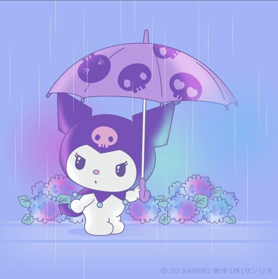

Kuromi (クロミ, Kuromi) is a character from the My Melody universe. She is My Melody's rival, and manifests as a white rabbit or imp-like creature wearing a black jester's hat with a pink skull on the front and a black devil's tail. The skull's facial expression changes to match Kuromi's mood. Fittingly, her birthday is Halloween (October 31st). Her name translates from Japanese to English as "black beauty".
Reasons why I like Kuromi